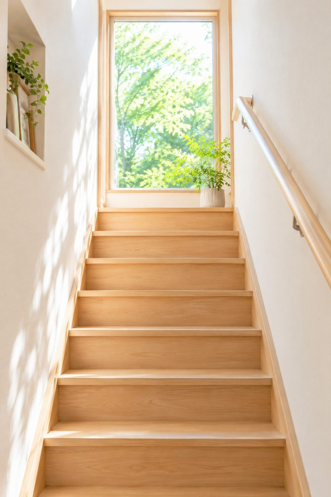
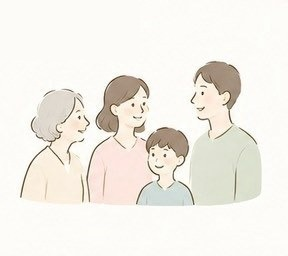

在宅医と連携し即日訪問可能
デイ・ショート連携施設あり
理学療法士のリハビリ対応
SENSE VISITING NURSING STATION
訪問看護で
“その人らしい暮らし”を支えます
ご自宅で安心して過ごしたいあなたへ。
医療とやさしさを、あなたの暮らしの中へお届けします。

Worries
こんなお悩みありませんか？
- 退院後の生活が不安
- お薬や体調管理が心配
- 通院が大変
- 最期まで自宅で過ごしたい
- 家族の介護に不安がある
そんなときは、訪問看護をご利用ください
Features
扇子訪問看護ステーションの特徴
即日訪問が可能
在宅医と連携し、必要なときにすばやく対応。退院直後や急な体調変化でもご相談ください。
連携施設あり
デイサービス・ショートステイの連携施設があり、在宅生活を多方面から支えます。
リハビリにも対応
理学療法士による身体機能・生活動作のリハビリで、「できること」を一緒に増やします。
Service
サービス内容
訪問看護
医療保険・介護保険に対応しています。
精神訪問看護
心のケアや支援を行います。
健康状態の観察
血圧・体温などのチェック。
服薬管理
お薬の確認や飲み忘れの防止。
医療処置
医師の指示に基づく医療処置を行います。
ご家族支援
介護やご家族のご相談に対応します。
For You
対象となる方

- 在宅療養中の方
- 医療的ケアが必要な方
- 精神的サポートが必要な方
主治医の指示でご利用いただけます。まずはお気軽にご相談ください。